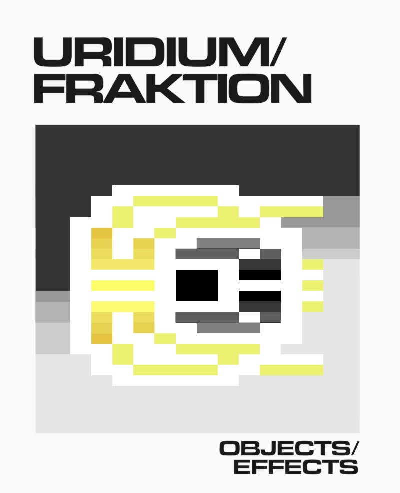

URIDIUM/FRAKTION is a book-length attempt to explore and understand the code and craft of Andrew Braybrook's 'Uridium' (1986).
The idea is to explain how lots of different little things in each of the games actually work, down to the level of how they are implemented in the 6502 assembler source code.
I tried to keep it light and digestible so the book consists of lots of little chapters, each one presenting a hopefully-tasty morsel from one of the games.
You can download and read the book here. A dual-page view in your PDF reader is recommended to aid viewing code and commentary side-by-side.
The book is free, but if you like it you can gift what you want.
Find out more about the making of this book at its github repository.
IRIDIS ALPHA THEORY , a book length treatment of Iridis Alpha that goes into the game's mechanics in just about the same insane level of detail as this one.
psychedelia syndrome , a book length treatment of psychedelia exploring the full mechanics and source code of Jeff Minter's Psychedelia.